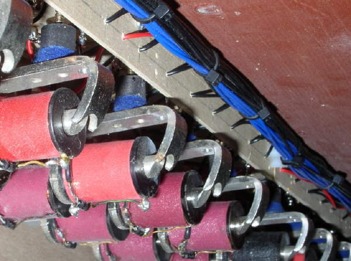
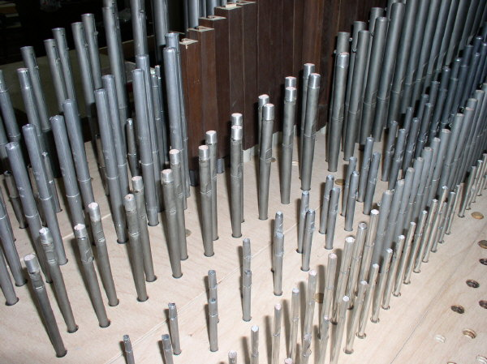
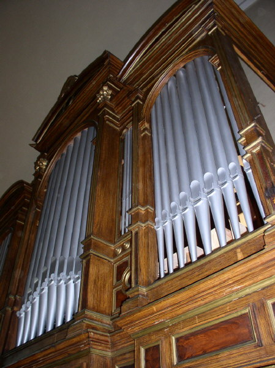

Vzdušnice.Základem, jakımsi „srdcem“ varhan je vzdušnice. Z vnìjšího pohledu se jedná o plochou skøíò, která však v sobì ukrıvá sloitá zaøízení, která „pøidìlují vzduch jednotlivım píšalám nástroje podle vùle varhaníka“. Brtnické varhany mají vzdušnice tøi – jednu pro první manuál a dvì
pro druhı manuál a pedál. Vzdušnice prvního manuálu je zásuvková (rejstøíky
jsou ovládány pomocí zásuvek). Ovládání otevírání ventilù je elektropneumatické
– elektrickı impuls od hracího stolu sepne elektromagnet, kterı otevøe
malı ventil (cívku), pøes kterı se vypustí vzduch z vìtšího klínového
míšku. Ten splaskne a pomocí tahacího drátu otevøe vìtší – tónovı ventil,
vzduch z ventilové komory pak takto vzniklım otvorem mùe proudit do
tónové kancely a pøes otvory v zásuvkách a píšalnicích dále a do píšal
zapnutıch rejstøíkù: |
Zaøízení (magnet, cívka, míšek, ventil…), nakreslená
na pøedchozí animaci se ve vzdušnici opakují tolikrát, kolik je tónù,
tedy 61x. Míšky jsou v diskantu z prostorovıch dùvodù ve dvou øadách nad
sebou. I kdy se celé ovládání mùe jevit jako sloité a tìkopádné, chod
vzdušnice je velmi rychlı a pøesnı. Pneumatickı mezièlánek je pouit z
dùvodu potøebné vìtší dráhy a síly pro otevøení ventilu, pokud by byl
ventil ovládán elektromagnetem pøímo, bylo by potøeba podstatnì vìtšího
magnetu i vìtší energie pro jeho sepnutí. |
| Pohled do otevøené ventilové komory (bas). Dole klínové míšky, nahoøe tónové ventily. |

| Ventilová komora v diskantu má z prostorovıch dùvodù míšky ve dvou øadách nad sebou. |
 Páèkové elektromagnety (Laukhuff) v diskantu a v basu. V basové èásti je mezi magnet a míšek vloeno ještì pneumatické mezirelé.
|
Na vzdušnici prvního manuálu je 610 píšal (pøesnìji 601) v desíti
øadách (v sedmi rejstøících, jeden rejstøík je dvouøadı a jeden tøíøadı).
Drobnou vıjimku toti tvoøí prvních 9 píšal Principálu, které jsou
umístìny v prospektu a se vzdušnicí propojeny pomocí ohebnıch konduktù
(hadic).
|
Uspoøádání píšal na vzdušnici a detail malıch píšal. |

| Vzdušnice pedálu a druhého manuálu je skøíòová (Unit). Stojí na ní jedna øada píšal. Tok vzduchu do píšal ovládají ventily tvoøené membránou (malım míškem) z jemné kùe. Systém ovládání je opìt „vıpustnı“ – ventil se otevøe díky vypuštìní stlaèeného vzduchu z membrány pomocí malého elektromagnetického ventilu (tzv. Reisnerovy magnety“). |
Øez skøíòovou vzdušnicí (jedním tónem) v klidu a pøi znìní tónu. |
Elektromagnet ventilu po sepnutí proudu do cívky pøitáhne
kovovı krouek, kterı pøedstavuje aktivní èlen. Krouek uzavøe otvor
pod cívkou (1) a otevøe vıfukovı otvor (2). Kanálkem (3) unikne vzduch
zpod membrány, ta splaskne a pomocí k ní pøipevnìného ventilu otevøe
otvor do nohy píšaly, která zazní. Po vypnutí proudu krouek vlastní
vahou odpadne, uzavøe vıfukovı otvor (2) a pøes otvor (1) a kanálek
(3) se membrána opìt naplní stlaèenım vzduchem ze vzduchovodu. Ventil
uzavøe pøívod vzduchu do píšaly a ta se odmlèí. |
Vzdušnice druhého manuálu a pedálu zespodu.
|
Prospekt. |

Prospekt varhan v Brtnici. Píšaly v prùèelí varhanní skøínì tvoøí prospekt.
Jejich rozmístìní vìtšinou dotváøí vıtvarnı zámìr stavitele a ze zvukového
hlediska by rozmístìní píšal mìlo alespoò pøiblinì sledovat sled
tónù na vzdušnici. U varhan v Brtnici zùstala vıznamná èást prospektu
nìmá. Varhanáøe k tomu vedlo nìkolik dùvodù: |
Druhım dùvodem pro ponechání èásti prospektu pouze
pro dekoraci bylo chromatické uspoøádání tónù na nové vzdušnici. Kondukty
k píšalám v prospektu by byly pøíliš dlouhé a pro správnı zvuk by bylo
nutné jejich nahrazení prospektovou vzdušnicí se samostatnım ovládáním
(vzdušnice pod prospektem pouze pro píšaly v nìm umístìné). Vzhledem
k nízké kvalitì píšal (viz vıše) toto øešení nebylo pouito a byla
dána pøednost umístìní aktivních píšal pøímo na vzdušnici. |
Hrací stùl a traktura. |

|
Varhaník nástroj ovládá pomocí hracího stolu. Zde jsou klaviatury pro ruce (manuály) a pro nohy (pedál), ovládání rejstøíkù (sklopky) a pomocná zaøízení (kolektivy a volná kombinace). Hrací stùl je s ventily ve vzdušnicích propojen pomocí traktury. Ta je u tohoto nástroje elektrická (zadavatel poadoval pohyblivost hracího stolu po ploše kùru z dùvodu pøizpùsobení prostorové dispozice pøítomnosti sboru èi orchestru, co lze splnit jen pøi propojení pomocí ohebného kabelu, mechanické èi pneumatické øešení nepøipadá v tomto pøípadì v úvahu). Kadá akce (stisk klávesy, tlaèítka, pøeklopení sklopky) je pøevedena na elektrickı signál, kterı je zpracován pomocí logickıch funkcí (splnìní rùznıch podmínek typu „pokud je stisknuta klávesa c a zapnut rejstøík xy a není zapnuta spojka yz, pak poadovat otevøení ventilu è. 37“). Pøíslušnı impuls je od stolu veden 188 ilovım ohebnım kabelem do skøínì nástroje, kde øídí vıkonovı èlen, kterı pak elektricky ovládá odpovídající elektromagnety pod vzdušnicí. Øez kabelem, propojujícím hrací stùl se skøíní nástroje. |
|
V obou pøípadech je jeden z kontaktù opatøen regulací polohy, umoòuje tak precizní regulaci okamiku sepnutí kontaktu v závislosti na hloubce stisku klávesy. Stejnì (tedy kontaktnì) jsou ovládány i rejstøíky pomocí kontaktù
pod sklopkou. Pøepínání mezi ruèními rejstøíky, navolenou volnou kombinací
a pøednastavenımi kolektivy s vıraznì odstupòovanou dynamikou se pak
dìje pomocí tlaèítek pod prvním manuálem. |

Pohled do otevøeného hracího stolu zezadu.Zcela
nahoøe jsou vidìt spínaèe volné kombinace, pod nimi sklopky a klávesy
manuálù. Celá elektronika traktury (signálová logická èást) je na nìkolika
deskách ve spodní èásti stolu: |
Elektronika traktury (propojené desky, ještì pøed
vysvazkováním a zakrytováním kabelovıch kanálù). Vlevo nahoøe deska
registratury (pøepínání rejstøíkù, kolektivy a kombinace), vpravo nahoøe
pedál, vlevo dole I. manuál a vpravo dole II. manuál (Unit). |
Deska registratury a detail logiky kolektivù. |
Pohled na diodovou matici (deska Unit spojky 2’). |
 Z
dùvodu odolnosti proti pøepìtí (èasté bouøky v místì provozu, problematická
napájecí sí) a snadné opravitelnosti i po létech provozu nejsou v traktuøe
pouity sice moderní, pøesto však po èase problematicky nahraditelné
souèástky (napø. obvody s vyšší integrací a mikroprocesory). Celá logika
øízení je tak øešena pomìrnì konzervativnì (odporovo – diodová logika).
Jedná se o kompromis mezi podmínkou bezproblémové dlouhé ivotnosti
a pouití technickıch øešení na úrovni doby vzniku nástroje. Vzhledem
k tomu, e varhany mají ivotnost poèítanou na desítky a stovky let,
nemohou obsahovat souèásti, jejich fyzická ivotnost je cca dvacetiletá
(pamìti EPROM) a morální ještì kratší (mikropoèítaè). Z
dùvodu odolnosti proti pøepìtí (èasté bouøky v místì provozu, problematická
napájecí sí) a snadné opravitelnosti i po létech provozu nejsou v traktuøe
pouity sice moderní, pøesto však po èase problematicky nahraditelné
souèástky (napø. obvody s vyšší integrací a mikroprocesory). Celá logika
øízení je tak øešena pomìrnì konzervativnì (odporovo – diodová logika).
Jedná se o kompromis mezi podmínkou bezproblémové dlouhé ivotnosti
a pouití technickıch øešení na úrovni doby vzniku nástroje. Vzhledem
k tomu, e varhany mají ivotnost poèítanou na desítky a stovky let,
nemohou obsahovat souèásti, jejich fyzická ivotnost je cca dvacetiletá
(pamìti EPROM) a morální ještì kratší (mikropoèítaè). |
Vıkonovı modul – deska tranzistorovıch spínaèù.
|
Na další stránce naleznete malou reportá z prùbìhu jeho stavby, na pøedchozí úvod a dispozici. Na samostatné stránce pak nìkolik fotografií a dispozici barokních varhan v zámeckém kostele blahoslavené Juliany. ©2005 - Ing. Petr Bernat. |


 U pùvodních varhan „hrály“ všechny píšaly v prospektu, jejich zvuk
však byl pomìrnì problémovı. Vzduch byl ze vzdušnice k píšalám pøiveden
pomìrnì dlouhımi kondukty, píšaly mìly znaèné naddélky (z vıtvarnıch
dùvodù prodlouená nefunkèní èást v horní èásti píšaly), které znemoòovaly
pøesnou intonaci. Kvalita píšal byla nevyrovnaná, provedení pøedevším
vìtších (zinkovıch) pomìrnì nekvalitní (nepøesné švy, velmi slabé
jádro…). Proto byly píšaly nahrazeny novımi jen ve støedním poli
prospektu a se vzdušnicí propojeny ohebnımi kondukty.
U pùvodních varhan „hrály“ všechny píšaly v prospektu, jejich zvuk
však byl pomìrnì problémovı. Vzduch byl ze vzdušnice k píšalám pøiveden
pomìrnì dlouhımi kondukty, píšaly mìly znaèné naddélky (z vıtvarnıch
dùvodù prodlouená nefunkèní èást v horní èásti píšaly), které znemoòovaly
pøesnou intonaci. Kvalita píšal byla nevyrovnaná, provedení pøedevším
vìtších (zinkovıch) pomìrnì nekvalitní (nepøesné švy, velmi slabé
jádro…). Proto byly píšaly nahrazeny novımi jen ve støedním poli
prospektu a se vzdušnicí propojeny ohebnımi kondukty. Øídicími
èleny traktury jsou kontakty. Ty po stisku klávesy, tlaèítka èi pedálu
uzavírají pøíslušnı elektrickı obvod a informují tak o tomto øídicím
impulsu logické obvody v traktuøe. Na horním obrázku jsou kontakty
pod klávesami, na dolním kontaktní svazky u pedálové klaviatury.
Øídicími
èleny traktury jsou kontakty. Ty po stisku klávesy, tlaèítka èi pedálu
uzavírají pøíslušnı elektrickı obvod a informují tak o tomto øídicím
impulsu logické obvody v traktuøe. Na horním obrázku jsou kontakty
pod klávesami, na dolním kontaktní svazky u pedálové klaviatury.

 Vıkonová
èást traktury je umístìna v postamentu varhanní skøínì pøímo pod vzdušnicí.
Kabelem od hracího stolu tak pøicházejí jen øídicí impulsy a vlastní
ovládání magnetù se dìje na krátkou vzdálenost uvnitø varhanní skøínì.
Je to vıhodnìjší z hlediska menších úbytkù napìtí na kratších vodièích
(i tak je propojení se vzdušnicí realizováno témìø jedním kilometrem
vodièe), propojení hracího stolu s nástrojem mùe pak bıt provedeno
podstatnì tenèím kabelem (vnìjší prùmìr pancíøe je 32 mm) atd.
Vıkonová
èást traktury je umístìna v postamentu varhanní skøínì pøímo pod vzdušnicí.
Kabelem od hracího stolu tak pøicházejí jen øídicí impulsy a vlastní
ovládání magnetù se dìje na krátkou vzdálenost uvnitø varhanní skøínì.
Je to vıhodnìjší z hlediska menších úbytkù napìtí na kratších vodièích
(i tak je propojení se vzdušnicí realizováno témìø jedním kilometrem
vodièe), propojení hracího stolu s nástrojem mùe pak bıt provedeno
podstatnì tenèím kabelem (vnìjší prùmìr pancíøe je 32 mm) atd.